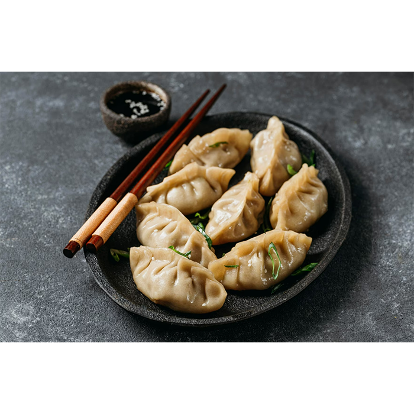
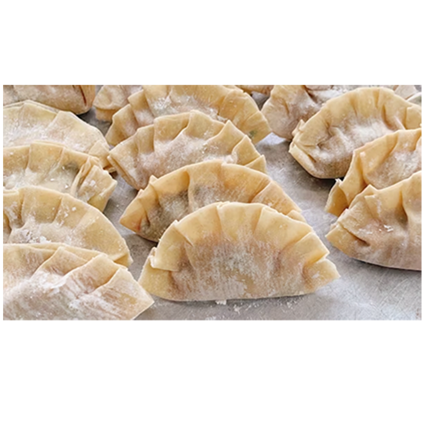
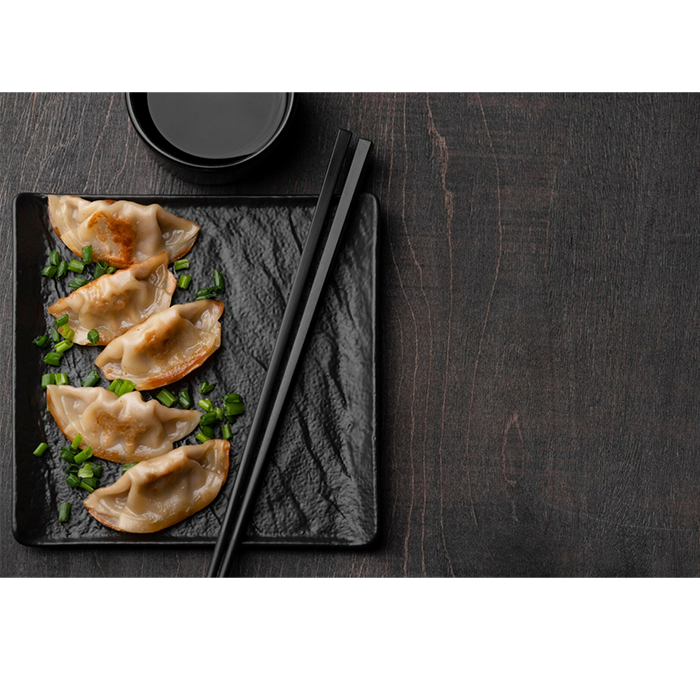

Chinese dumplings, known as "jiaozi," have a fascinating history that traces back to ancient times. The origins of jiaozi can be found in China, where they were first made over 1,800 years ago. These dumplings were initially devised as a clever way to utilize leftover ingredients, preventing waste. Early jiaozi were simple, filled with a mixture of chopped meat and vegetables, enclosed in a basic flour-based wrapper. Over the centuries, jiaozi evolved, with various shapes, fillings, and cooking methods emerging. Today, jiaozi remain a beloved culinary tradition in China and have even spread their delectable influence worldwide.